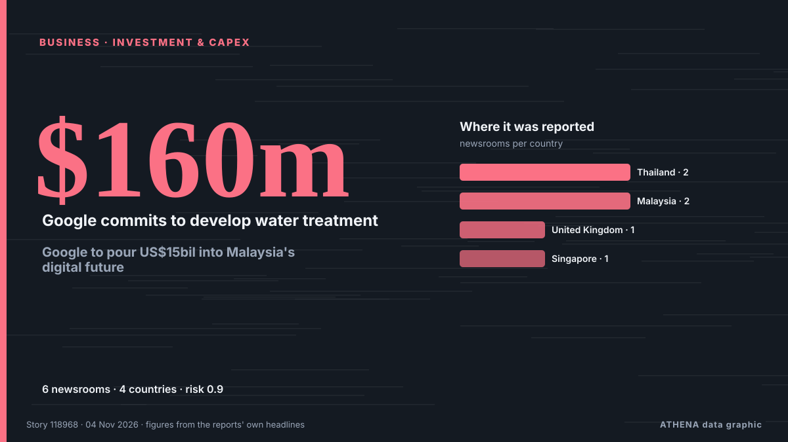

Empresas, compañías e inversión
PatrocinadoPresentado por  Cybernetics and Artificial Intelligence Lab Welcome to the Cybernetics and Artificial Intelligence Laboratory, established at the Department of Business Administration of the National and Kapodistrian University of Athens. The lab is headed by Professor Dimitrios Thomakos. The lab aims to do research that can be published in top venues. Our research uses tools and methods of Artificial Intelligence, and lies in the following areas: - Forecasting - Decision making - Cyber security - Finance We are always looking forward to collaborating with exceptional students!
Cybernetics and Artificial Intelligence Lab Welcome to the Cybernetics and Artificial Intelligence Laboratory, established at the Department of Business Administration of the National and Kapodistrian University of Athens. The lab is headed by Professor Dimitrios Thomakos. The lab aims to do research that can be published in top venues. Our research uses tools and methods of Artificial Intelligence, and lies in the following areas: - Forecasting - Decision making - Cyber security - Finance We are always looking forward to collaborating with exceptional students!
Los titulares se muestran en inglés, tal como se publicaron.

InversionesGoogle to pour US$15bil into Malaysia's digital future
KUALA LUMPUR: Google will invest US$15 billion in Malaysia between 2027 and 2028 to develop digital infrastructure, including data centre campuses in industrial zones, and expand clean energy… de New Straits Times
| 22 oct | 66 |
|---|---|
| 23 oct | 67 |
| 24 oct | 40 |
| 25 oct | 37 |
| 26 oct | 95 |
| 27 oct | 96 |
| 28 oct | 92 |
| 29 oct | 102 |
| 30 oct | 92 |
| 31 oct | 27 |
| 1 nov | 33 |
| 2 nov | 109 |
| 3 nov | 81 |
| 4 nov | 16 |
Danantara prepares project pipeline for US talks ahead of G20
Indonesia’s sovereign wealth fund, the Danantara Investment Management Agency, is finalizing a portfolio of ... de Antara (English)
Democratic takeover of US Congress: What happens next
Buoyed by victories in traditional Republican strongholds, Democrats pledged swift action on living costs and the Iran war, while prioritising investigations into alleged abuses and corruption. de Free Malaysia Today
Piraeus container throughput returns to growth in third quarter
Container throughput at Pier I of the Port of Piraeus returned to growth during the third quarter of 2026, despite remaining significantly lower across the first nine months of the year. de Container News
Libya's top religious authority rules against wearing Nike clothes
The US company was named after the Greek goddess of victory, so the Dar al-Ifta said displaying its logo was unIslamic. de BBC News
StormGeo acquires Portchain to accelerate Just-in-Time voyage optimisation at scale
StormGeo’s acquisition of software provider Portchain adds port call coordination to StormGeo’s Voyage Intelligence platform. de Ship.Energy
Von der Leyen: Hormuz closure cost Europe €127 billion
European Commission president's remarks come after the US struck Iran’s Qeshm Island on Monday night. de Euractiv
Apple FYQ4 Revenue Tops Forecasts On iPhone Sales As New CEO John Ternus Steps Up
Apple revenue beat Wall Street forecasts rising 12% for the fiscal fourth quarter ended in September, led by strong iPhone sales. de Deadline
Nexperia sues Wingtech and its founder, demanding compensation for damages
Nexperia has launched legal action against its Chinese parent company, Wingtech Technology, demanding more than $2 billion in compensation, according to Wingtech. de NL Times
Palantir nearly doubles 3Q26 revenue, riding wave of commercial demand
Palantir reported third-quarter 2026 revenue results that nearly doubled from the previous year. de DigiTimes Asia
Hinge is making a surprising change to its subscriptions. Here’s who stands to benefit
Hinge users may soon have access to a more affordable subscription tier. de Fast Company
Google dismantles botnet secretly running on 1.3 million Android TV boxes
Google has cut ties with the company behind the botnet campaign. de Ars Technica
Aramco’s Q3 profit jumps 34.5% to $36.3bn
RIYADH: Saudi Aramco’s net profit rose 34.5 percent year on year to $36.3 billion in the third quarter, boosted by higher revenue and a gain from the sale of its stake in Malaysian refining and… de Arab News
German auto supplier Schaeffler to cut 3,460 jobs in Europe amid automotive crisis
Restructuring targets net reduction of 2,660 positions in Germany and 800 across rest of Europe by 2028. de Anadolu Agency (English)
Belgrade Commercial Court Opens Bankruptcy Proceedings Against Alta Banka
The Commercial Court in Belgrade opened bankruptcy proceedings against Alta Bank, appointing the Deposit Insurance Agency as the bankruptcy administra. de N1 Serbia (English)
Seven Arrested in International Operation Targeting Investment Fraud
Authorities from seven countries seized more than 100 servers and arrested seven suspects of investment fraud that may have costed victims in at least 50 countries more than $4.6 million. de OCCRP
Aramco acquires 49% stake in Saudi Arabia's Humain
RIYADH: Saudi Aramco has completed its acquisition of a 49 percent stake in artificial intelligence company Humain, formalising an agreement first announced in October 2025, in a transaction… de Arab News
Bahrain announces $3.89bn investment as AirAsia, DHL and Meliá unveil major projects
Bahrain announces $3.89bn in investment across four Golden Licence projects involving AirAsia, DHL, Meliá and a new technology hub. de Arabian Business
Retailer Zalando launches AI shopping agent as margins squeezed
Zalando beat sales expectations in the third quarter and introduced its first AI-powered shopping tool, but investors focused on weaker margins. de The Next Web
Iulian Stanciu is selling Flanco electroretail-chain to Kotsovolos, part of the PPC Group
PPC Group announces that its 100% subsidiary Kotsovolos (Next Gen Retail Services Single Member) has signed an agreement for the acquisition of 100% of the shares of the Romanian technology and… de Business Review (Romania)
Hypersonic missile being made by British-German startup ‘could strike deep inside Russia’
It comes as part of a UK-German defense parnership signed by former defence secretary John Healey in 2024. de The Independent
Tanzania eyes global energy conquest using 2026 ADIPEC to lure foreign capital
ABU DHABI: TANZANIA is positioning itself to tap into global investment opportunities in the energy sector by attracting both domestic and foreign capital, Energy Minister Dr Juma Homera has said. de Daily News
TotalEnergies to Take Operatorship of Two Major Gas Fields off Malaysia
TotalEnergies has signed agreements to acquire a 30% operated interest in the Lang Lebah and B14 gas fields offshore Malaysia, paving the way for an integrated development… de Offshore Engineer
AD Ports Group appoints Afif Saif Al Yafei as new CEO
AD Ports Group has appointed Dr. Afif Saif Al Yafei as its new Group Chief Executive Officer, succeeding Captain Mohamed Juma Al Shamisi, who has led the company since 2014. de Container News
Blackstone’s Gray sees more AI equity fundraising ahead from major tech firms
Gray’s comments reinforce a theme running through this week’s news flow: the AI buildout is increasingly being financed by issuing shares, not just from cash flow and debt. de investingLive (ForexLive)
New Apple CEO John Ternus chalks up some early wins, but the honeymoon is over
Apple beat earnings expectations Monday, but it’s facing surging memory chip costs and investor questions about its new Siri AI product. de Fortune
Judge blocks Trump administration from pressuring states over non-citizen voting
Non-citizen voting is illegal and all available evidence shows that it is exceedingly rare. de The Straits Times
Nakilat Names Nine New Gas Carriers in South Korea
Qatar Gas Transport Company (Nakilat) has named nine new gas carriers at three South Korean shipyards, marking progress in its fleet expansion programs aimed at increasing LNG transportation capacity… de MarineLink
Drivers will pay the price for Trump’s fuel economy rollbacks
WASHINGTON: A group representing General Motors, Toyota, Volkswagen and other major automakers on Monday backed the Trump administration in a legal challenge to its sharply lower vehicle fuel economy… de New Straits Times
Posco Holdings Q3 profit surges 48% as steel rebounds
Posco Holdings reported a 48 percent on-year jump in third-quarter operating profit Monday, extending its earnings recovery for a third consecutive quarter as improving steel margins and stable… de Korea Herald
Powered by Reliance Industries' surge, sensex rallies 1.2k points
Indian shares closed higher on Monday as strong Reliance Industries earnings, falling oil prices and hopes of tax breaks on equity investments lifted the BSE Sensex to a nearly two-month high… de Business Recorder
Ryanair to hit passengers in Europe with 'double-digit' hikes in air fares
Irish no-frills airline Ryanair said Monday it would launch a cost-cutting drive and hike fares next year to help offset the impact of soaring jet fuel prices driven by the Middle East war. de The Local Italy
Apple earnings preview as investors watch iPhone 18 demand and AI strategy
Apple reports quarterly results on Monday with investors looking for reassurance after a difficult month for technology stocks. de FXStreet
Trezor reports suspected hardware implant in Safe 5 sold by CryptoBilis
Trezor urged CryptoBilis buyers to migrate funds after receiving a credible report of a hardware implant inside a Safe 5 device. de The Block